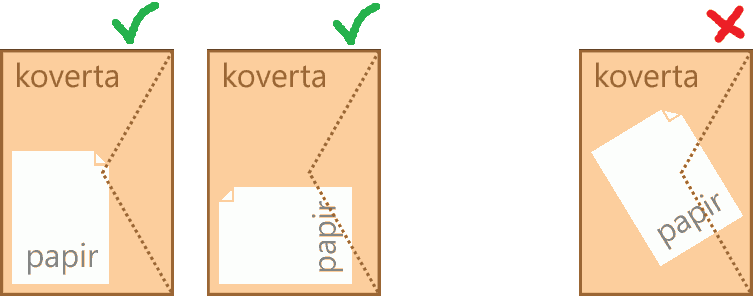

Логички подаци¶
Поређење бројева¶
Бројеви (изрази нумеричког типа) се у C# програмима (а и у програмима на многим другим програмским језицима) могу поредити на сличан начин као у математици. Симболи који се користе за означавање односа (релација) између бројева се донекле разликују у програмирању и математици. Следећа табела даје преглед ознака коришћених релација.
Математика |
C# |
Значење |
|---|---|---|
\(a < b\) |
a < b |
a је мање од b |
\(a \leq b\) |
a <= b |
a је мање или једнако b |
\(a > b\) |
a > b |
a је веће од b |
\(a \geq b\) |
a >= b |
a је веће или једнако b |
\(a = b\) |
a == b |
a је једнако b |
\(a \neq b\) |
a != b |
a није једнако b |
Ознаке \(<, <=, >, >=, ==, !=\) се у прогрaмирању називају релацијским операторима, а релације облика \(a < b\) се називају логички изрази. Тиме се наглашава да у програмирању (у процедуралним језицима као што је C#) није реч о констатовању и изражавању односа између датих бројева, него о израчунавању тог односа. Према томе, запис \(a < b\) треба да схватимо као израз чија је вредност у сваком конкретном случају „тачно” или „нетачно”. Вредности таквих израза могу да се исписују на исти начин као и било које друге вредности, на пример:
int a = int.Parse(Console.ReadLine());
int b = int.Parse(Console.ReadLine());
Console.WriteLine(a < b);
Овај кôд исписује реч true (тачно) или реч false (нетачно), у зависности од вредности које унесте корисник за целобројне променљиве.
Операторе \(<, <=, >, >=, ==, !=\) можемо да користимо и за поређење карактера и при томе се заправо пореде кодови тих карактера. Дакле, исто као за целобројне или реалне податке, можемо писати и
char ch1 = (char)Console.Read();
char ch2 = (char)Console.Read();
Console.WriteLine(ch1 < ch2);
Овакво поређење може да има смисла када поредимо слова енглеске абецеде, јер важи да је ’A’ < ’B’, ’B’ < ’C’, ’C’ < ’D’ итд. Такође је и ’a’ < ’b’, ’b’ < ’c’, ’c’ < ’d’ … али треба водити рачуна о томе да су кодови свих великих енглеских слова мањи од кодова свих малих (енглеских) слова, тако да је на пример ’Z’ < ’a’ (иако је ’z’ > ’a’ и ’Z’ > ’A’).
Напомена: на жалост, корист од оваквог поређења карактера је ограничена, јер правилност која постоји у кодовима енглеских слова не важи за остале језике. Тако, на пример, кодови ћириличних слова српског језика нису у истом редоследу као слова у азбуци. Када се наша слова поређају тако да њихови кодови буду у растућем редоследу, добија се низ Ђ Ј Љ Њ Ћ Џ А Б В Г Д Е Ж З И К Л М Н О П Р С Т У Ф Х Ц Ч Ш (а при томе ови кодови нису ни узастопни). Ово значи да важи, на пример ’Џ’ < ’Б’ јер је кôд слова ’Џ’ мањи од кода слова ’Б’, мада слово Б претходи слову Џ у нашој азбуци. Разлози за ово су донекле разумљиви, јер иста слова могу да постоје у различитим језицима, а не морају да буду у истом редоследу у алфабетима (азбукама, абецедама) свих језика у којима постоје. Због тога у језику C# постоје посебни методи поређења стрингова у смислу редоследа речи у речнику (такозвани лексикографски поредак речи). О томе како се врши поређење текстуалних података можете прочитати нешто више ако кликнете на дугме испод.
Поређењe текстуалних података:
Да би се избегле грешке и неспоразуми, оператор
<није подржан за поређење стрингова (запис"ABC" < "abc"предтавља синтаксну грешку). Уместо тога, за поређење стрингова понуђено је неколико функција (метода). Како редослед слова у принципу зависи од језика, остављена је могућност задавања језика чији алфабет (азбука, абецеда) се користи за поређење. Без намере да се дубље упуштамо у све могућности различитих функција за поређење текста, илустроваћемо неке од могућности метода String.Compare следећим програмом:Очекује се да корисник у једном реду унесе две речи, које програм смешта у променљиве tekst1 и tekst2 а затим те речи пореди на три различита начина.
У свакој од верзија метода String.Compare које се појављују у програму, прва два аргумента су стрингови које поредимо. Стрингови се методом String.Compare свакако пореде карактер по карактер, док се на некој позицији не дође до пара различитих карактера или док се не дође до краја једног од стрингова. Ако се наиђе на пар различитих карактера, те карактере поредимо на изабрани начин, а резултат тог поређења је уједно и резултат поређења стрингова (примери следе). Ако се не наиђе на пар различитих карактера, краћи стринг је префикс дужег и претходи му по дефиницији.
Метод String.Compare увек враћа цео број као резултат, и то:
негативан број ако стринг tekst1 претходи стрингу tekst2 по изабраном начину поређења.
нулу ако су стрингови tekst1 и tekst2 равноправни по изабраном начину поређења.
позитиван број ако стринг tekst1 следи стринг tekst2 по изабраном начину поређења.
У првом од три употребљена поређења, као трећи аргумент смо користили StringComparison.Ordinal, што значи да се поређење врши само на основу кодова карактера. Ако се при поређењу стрингова наиђе на пар различитих карактера, карактер са мањим кодом претходи карактеру са већим кодом.
Када метод String.Compare има само два аргумента, поређење се врши према правилима тренутно важеће културе (језика), односно према редоследу слова у алфабету тог језика. У датом програму је постављена култура српског ћириличног писма наредбом
CultureInfo.CurrentCulture = new CultureInfo("sr-SP-Cyrl", false);У последњој наведеној варијанти метода String.Compare користили смо логичку вредност као трећи аргумент. Ова логичка вредност говори да ли треба занемарити разлику између малих и великих слова. Ми смо користили вредност true, па су при последњем поређењу мала и велика слова поистовећена. При овом поређењу се такође подразумева тренутно важећа језичка култура.
У следећој табели су дати неки могући улази за наведени програм, као и излази који се за те улазе добијају:
Поређење текстуалних података¶ тест
улаз
излаз
1
АЛГОРИТАМ ПРОГРАМ
-15
-1
-1
2
РАДОСТ РАСТ
-13
-1
-1
3
РАД РАДОСТ
-1054
-1
-1
4
РАСТ РАСТ
0
0
0
5
ражањ Ражањ
32
-1
0
6
ЂОН БОН
-15
1
1
У прва три теста сви резултати су негативни, што значи да прва реч претходи другој у свим коришћеним начинима поређења. У прва два теста наилазимо на пар различитих карактера на првој, односно трећој позицији (’А’ < ’П’ у првом, а ’Д’ < ’С’ у другом тесту, без обзира на начин поређења), док је у трећем тесту прва реч префикс друге и зато јој претходи.
У четвртом тесту су сва три резултата једнака нули, јер поредимо два истоветна стринга, а они су при сваком начину поређења равноправни.
При поређењу стрингова „ражањ” и „Ражањ” добијамо три различита резултата. Поређење по кодовима даје позитиван резултат, што значи да кôд великог слова ’Р’ претходи коду малог слова ’р’. У поређењу по језичким правилима резултат је негативан јер мало слово претходи одговарајућем великом слову. На крају, ако занемаримо разлику између малих и великих слова, стрингови постају равноправни јер садрже исту реч и зато трећи начин поређења даје резултат 0.
На крају, при поређењу речи „ЂОН” и „БОН” кôд слова ’Ђ’ је мањи од кода слова ’Б’, али слово ’Б’ претходи слову ’Ђ’ у азбучном редоследу. Отуда и добијени резултати (негативан за поређење по кодовима, а позитиван за поређење по језику).
Логички тип¶
Вредности логичких израза на језику C# се и у програмима пишу редом као true (тачно) и false (нетачно). Ове вредности зовемо логичке константе, односно константе типа bool (бул). Тип bool зовемо и логички тип, а име је добио по енглеском математичару и логичару Џорџу Булу (George Boole). Као и за сваки други тип података, тако и за тип bool можемо да декларишемо променљиве тог типа:
bool b, f;
Променљиве логичког типа увек имају једну од две наведене вредности - true или false (не постоје друге логичке вредности осим ових). Као и код других типова, вредности се могу додељивати приликом декларисања, или накнадно:
bool b = true, f;
// ...
f = false;
Све изразе чија је вредност типа bool (логичког типа) зовемо логички изрази. Изрази попут \(a < b\), наведени у табели на почетку лекције спадају међу најједноставније логичке изразе (од њих су једноставније једино саме вредности true и false, то јест логичке константе). Тако можемо да пишемо, на пример:
int a = int.Parse(Console.ReadLine());
int b = int.Parse(Console.ReadLine());
bool manji = a < b;
или
string s1 = Console.ReadLine();
string s2 = Console.ReadLine();
bool kraci = s1.Length < s2.Length;
У првом примеру логичка променљива manji ће добити вредност true ако први учитани број буде мањи од другог, а false иначе. Слично томе, у другом примеру логичка променљива kraci ће добити вредност true ако први учитани стринг краћи од другог (ако је његова дужина мања од дужине другог стринга), а false иначе.
Вредности логичког типа се могу исписивати на исти начин као и бројеви и симболи (текст):
int a = int.Parse(Console.ReadLine());
int b = int.Parse(Console.ReadLine());
bool manji = a < b;
Console.WriteLine(a < b); // исписујемо вредност израза
Console.WriteLine(manji); // исписујемо вредност променљиве
Логичке операције¶
У обичном говору можемо да једноставнија тврђења повезујемо у сложенија, користећи негацију и везнике и и или. У математичким формулама се за повезивање једноставнијих тврђења користе ознаке \(\neg p\) за негацију, \(p \land q\) за конјункцију (логичко и), а \(p \lor q\) за дисјункцију (логичко или). На исти начин у програмима можемо да повезујемо једноставније логичке изразе и од њих градимо сложеније логичке изразе. Логичке изразе повезујемо помоћу логичких оператора који су наведени у следећој табели.
Оператор |
Математика |
C# |
Значење |
тачан ако и само ако |
|---|---|---|---|---|
негација |
\(\neg p\) |
!p |
није p |
p је нетачан |
конјункција |
\(p \land q\) |
p && q |
p и q |
p и q су оба тачни |
дисјункција |
\(p \lor q\) |
p || q |
p или q |
бар један од p и q је тачан |
Негација је унарни оператор, што значи да се примењује на један логички израз. Конјункција и дисјункција су бинарни оператори, то јест они повезују по два логичка израза у један сложенији.
Од ова три оператора, негација има највиши приоритет, затим конјункција (логичко и), а најнижи приоритет има дисјункција (логичко или). Тако на пример, ако су p, q и r логичке променљиве, запис p || q && r има исто значење као p || (q && r). Више примера у вези са приоритетом логичких оператора ће бити у следећем поглављу (лекција о сложеним условима у наредбама гранања).
Примери¶
Пример - интервал¶

Написати програм који учитава цео број и исписује да ли је тај број у границама од 0 до 100.
Да бисмо установили да ли број припада интервалу од 0 до 100, користимо сложени логички израз 0 <= n && n <= 100.
Пример - коверта¶
Написати програм који учитава димензије правоугаоног папира и коверте, а исписује да ли тај папир може да стане у коверту (да ли су димензије папира мање од одговарајућих димензија коверте). Све четири димензије су целобројне, а папир мора да се стави у коверту тако да су му ивице паралелне ивицама коверте. На следећој слици су приказана два дозвољена и један недозвољен начин стављања папира у коверту.
{kind=link}
Означимо димензије папира са visinaPapira и sirinaPapira, а коверте са visinaKoverte и sirinaKoverte. У једном од два дозвољена положаја важи:
\((visinaPapira < visinaKoverte) \land (sirinaPapira < sirinaKoverte)\),
а у другом
\((visinaPapira < sirinaKoverte) \land (sirinaPapira < visinaKoverte)\).
Папир може да се стави у коверту на тражени начин ако је испуњен бар један од ова два услова.
Услове можемо да рачунамо део по део, користећи логичке променљиве.
Још један начин је да цео сложени израз наведемо директно у наредби исписивања (не користећи логичке променљиве).